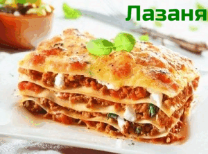

Италиански рецепти
Лазаня
Необходими продукти:
- кори за лазаня – 500 г (без варене, с яйца)
- лук – 1 глава
- чесън – 3-4 скилидки
- моркови – 1 бр.
- зехтин – 4-5 с.л.
- кайма – 600 г
- домати – 800 г (белени)
- доматено пюре – 2 с.л.
- вода – около 300 мл (или зеленчуков бульон)
- сол – на вкус
- черен пипер
- босилек
- масло – 60 г, за намазване на тавата
- брашно – 60 г
- прясно мляко – 1,2 л
- индийско орехче – 1 щипка
- пармезан – 300-400 г (или кашкавал за поръсване)
Начин на приготвяне:
За плънката лука, чесъна и моркова се нарязват на парченца и се задушават в зехтина, добавя се каймата и се запържва. Добавят се белените домати и пюрето, разтворено в чашата вода, оставя се да се поизпари течността. Добавя се зеленчуковият бульон или вода и се вари на тих огън около 45 минути. Подправя се на вкус.
За соса Бешамел се разтопява маслото и се прибавя брашното, разбърква се и бавно и непрекъснато от млякото, за да не се получат бучки. Ври до сгъстяване, посолява се и се слага индийското орехче.
Подходяща форма се намазва с масло, на дъното се слагат от соса и плънката, нареждат се кори за лазаня, сос и плънка, настърган пармезан, така се правят максимално пет реда. Най-накрая се покрива със сос Бешамел и настърган пармезан. Лазанята се пече в загрята фурна на 250°C около 20 минути на средна скара. Преди да се сервира, се оставя леко да се охлади около 10 минути.
Пица „Маргарита“
Необходими продукти:
- брашно – 225 г
- сол – 1 ч.л.
- мая – 1 ч.л. (суха)
- зехтин – 1 бр.
- вода – 6 с.л. (хладка)
- домати – 6 бр. (нарязани)
- моцарела – 175 г
- черен пипер
- босилек
Начин на приготвяне:
Пресейте брашното със солта в купа и добавете маята. Направете дупка в центъра и изсипете водата и олиото. Замесете меко тесто за пица и го оставете на топло място за един час. Замесете още веднъж и го разточете на тънка кора. Прехвърлете в намазнена тава.
Нарежете доматите и наредете върху тестото, върху тях сложете резените моцарела. Поръсете с черен пипер и сол, босилек и малко зехтин. Изпечете пицата „Маргарита“ в загрята на 230°C фурна за 15-20 минути.